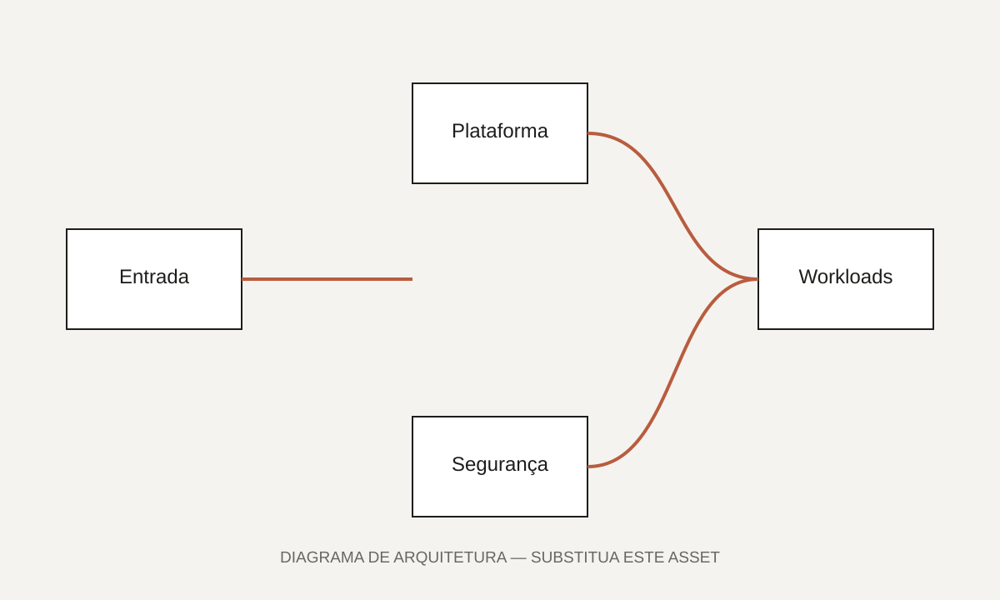

01 · Visão geral
Uma introdução clara ao projeto.
Comece explicando o cenário em linguagem acessível. Qual era o ambiente? Quem utilizava a plataforma? Por que esse projeto era importante para a organização?
Apresente apenas as informações que podem ser compartilhadas publicamente. Evite nomes internos, dados sensíveis, endereços, identificadores, custos exatos ou detalhes que possam expor a segurança do ambiente.
Descreva em uma frase a limitação ou risco que motivou o projeto.
Resuma a abordagem técnica e organizacional adotada.
Explique o benefício observado ou esperado após a entrega.
02 · O desafio
O contexto antes da solução.
Detalhe o estado inicial e os principais obstáculos. Uma estrutura útil é: contexto, limitações existentes, riscos e objetivo desejado.
“Exemplo: era necessário criar uma fundação cloud segura e escalável sem aumentar a complexidade operacional para os times de desenvolvimento.”
- Desafio de governança ou padronização.
- Limitação técnica ou operacional.
- Requisito de segurança, escala ou disponibilidade.
- Dependências entre equipes e sistemas.
03 · Meu papel
Responsabilidades e colaboração.
Explique sua contribuição em primeira pessoa. Diferencie claramente o que você liderou, o que desenvolveu diretamente e o que realizou em colaboração com outras equipes.
Descoberta e desenho: levantamento de requisitos, riscos, dependências e definição da arquitetura.
Implementação: desenvolvimento de módulos, pipelines, policies e automações.
Governança: padrões, documentação, revisão técnica e transferência de conhecimento.
04 · Arquitetura
Como a solução foi estruturada.
Apresente os componentes de alto nível e como eles se relacionam. O diagrama deve ser conceitual e não deve revelar dados confidenciais.

assets/projetos/arquitetura-placeholder.svg.Componentes principais
Camada de fundação
Organização, contas ou projetos, identidade, redes e políticas básicas.
Automação
Terraform, pipelines, validações, testes e fluxo de aprovação.
Segurança
Guard rails, secrets, criptografia, auditoria e monitoramento.
Operação
Observabilidade, alertas, runbooks, ownership e suporte.
05 · Implementação
Da proposta à entrega.
Conte a implementação como uma sequência lógica. Evite descrever somente ferramentas; explique por que cada fase foi necessária.
- 1
Diagnóstico
Mapeamento do ambiente, requisitos, riscos e stakeholders.
- 2
Prova de conceito
Validação de padrões, integrações e hipóteses críticas.
- 3
Construção
Desenvolvimento gradual da infraestrutura, automações e controles.
- 4
Adoção
Documentação, onboarding, métricas e evolução da plataforma.

06 · Decisões técnicas
Escolhas, alternativas e trade-offs.
Esta seção demonstra maturidade arquitetural. Registre as principais escolhas, as alternativas consideradas e as consequências.
07 · Resultados
O valor entregue.
Inclua resultados verificáveis sempre que possível. Caso não possa divulgar números, use resultados qualitativos claros sem inventar métricas.
Provisionamento mais padronizado e previsível.
Redução de tarefas manuais e maior rastreabilidade.
Melhoria na postura de segurança e governança.
08 · Aprendizados
O que eu faria novamente — e o que mudaria.
Finalize com uma reflexão profissional. Fale sobre aprendizados técnicos, comunicação, governança e evolução futura da solução.
- Aprendizado que pode ser aplicado a novos projetos.
- Decisão que funcionou bem e deveria ser preservada.
- Ponto que seria abordado de outra forma em uma próxima versão.